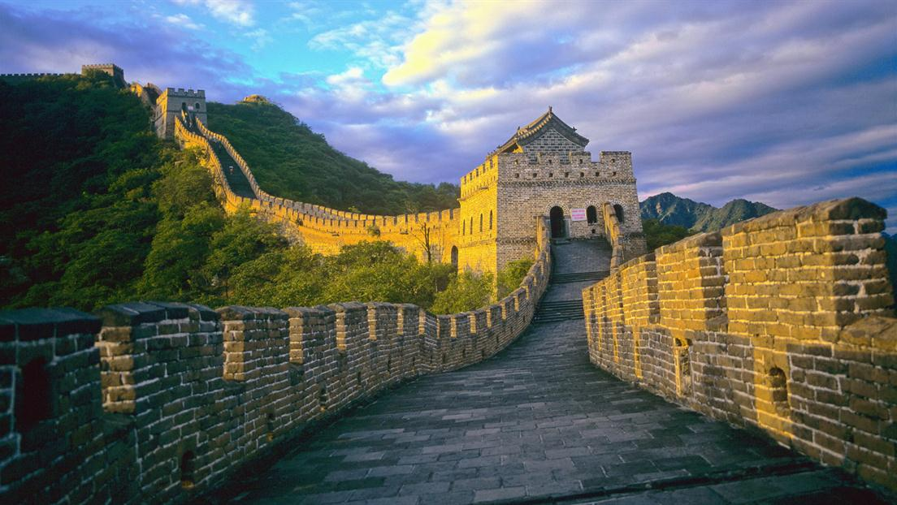
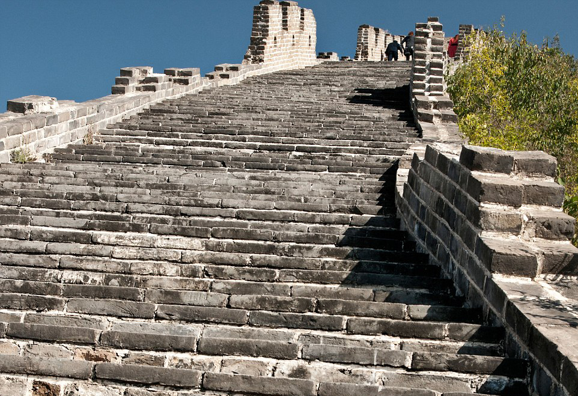
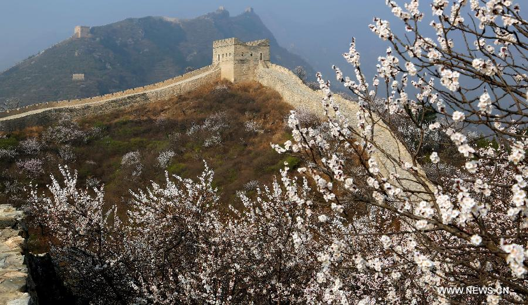
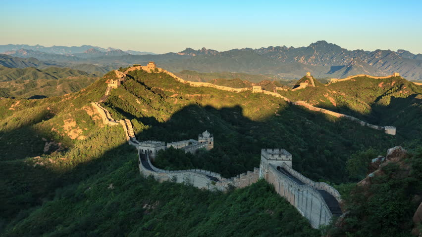

The Great Wall of China
There are four tourist sections of the Wall that are accessible from Beijing. The two most popular areas are Badaling and Mutianyu. Once you arrive at Mutianyu you have a few different options for getting to the Wall itself from the town below it. Most recently I chose the cable car (I've also done the enclosed gondola).
As I walked alongside the Great Wall, I couldn't stop thinking about the millions of laborers, soldiers, and even criminals who constructed it. The individual walls are made of massive stones, each one shaped to perfection in the local villages. The workers then had to carry the hefty stones up the hills. The work was brutal and many workers got injured or lost their lives. During its construction, it was called "the longest cemetery on earth" estimates of casualties range from one to six millions.
There are all sorts of photo opportunities, it's a matter of finding the ones that are right for you. What makes Mutianyu unique are the arrow slots on the wall. For those of you unfamiliar, these are little narrow slots that would allow a soldier to shoot an arrow down at the enemy without exposing themselves and risk getting arrowed. What's different about Mutianyu is that these little slots are on both sides of the Wall. It really makes you wonder about the various uses of the Wall over the years, sometimes to keep Mongol invaders out, and maybe sometimes to keep others in.
